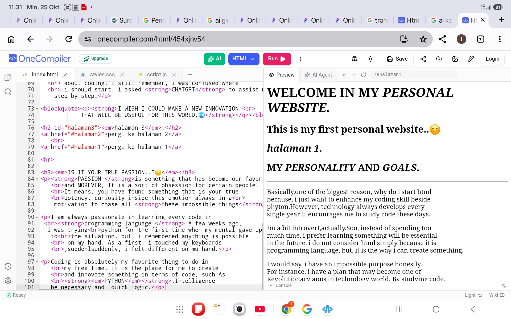
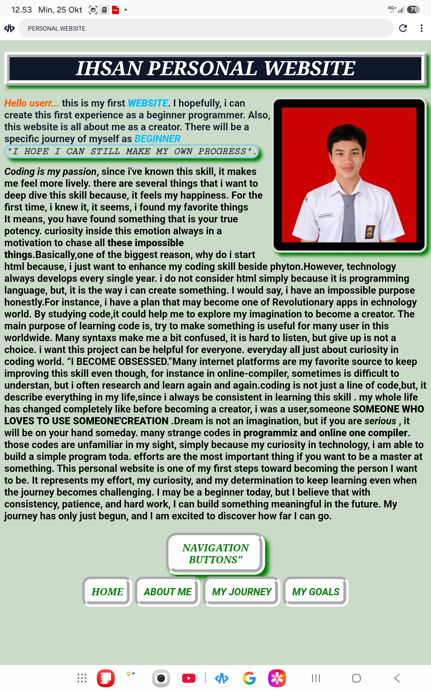

• The only one goal i have is to win, since i know coding a few weeks ago, i really love code I have a goal to build my own website and earn money from the Advertisement. this website will be the first website experiment in my coding journey. It can be a gret start for me to experience in making a site. Beside, In terms of money, i want to put all these projects as my international student profile someday for bachelor's degree overseas I know, it is not easy as i imagine. and im planning this website because i want to put this website in github.com.But i must do several revisions to make it more professional. Maybe, some people think that all these are useless to build...but for me, i have found my real passion. So...the biggest reason why i started learning how to code, simply because of my curiosity and passionate inside my intention
• "WHAT IS EXACTLY MY PURPOSE"
• For me, coding is not just about writing lines of code, but also about turning ideas into something useful. I want to improve my skills step by step, learn more about technology, and understand how applications and websites can solve problems in everyday life. I know that becoming a good programmer requires patience, discipline, and continuous learning. Even though I am still a beginner, I believe that every small project can teach me something valuable. In the future, I hope to create my own applications and share my ideas with the world. I want my journey to be more than just learning to code; I want it to become the beginning of something meaningful. Another important goal of mine is to become an independent and creative problem solver. I want to explore different programming languages, develop new ideas, and challenge myself to build projects that I have never tried before. I understand that my journey will not always be easy, and there will be times when I make mistakes or struggle to understand something. However, I see those moments as opportunities to learn and grow. I do not expect to become an expert overnight, because I believe that real progress comes from consistency and experience. One day, I hope to look back at my first website and remember how everything started with simple lines of code and a strong curiosity to learn.